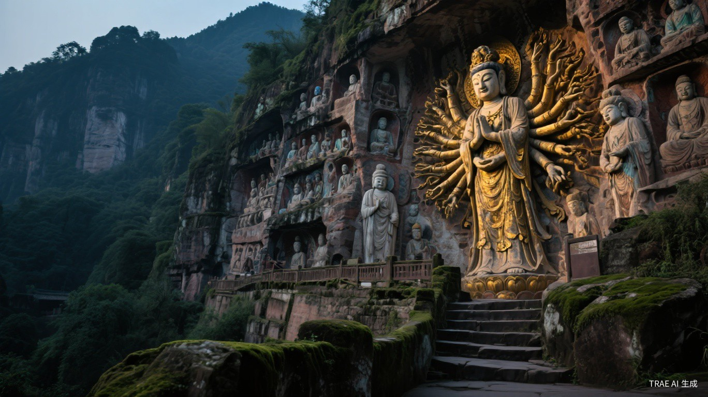
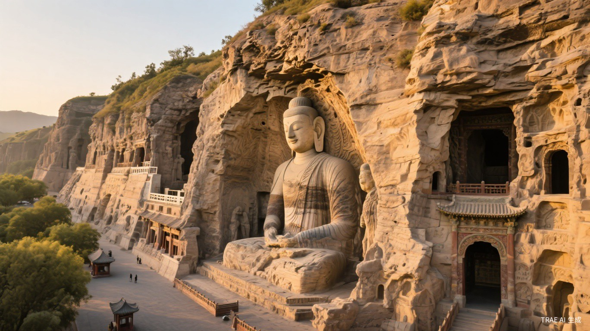
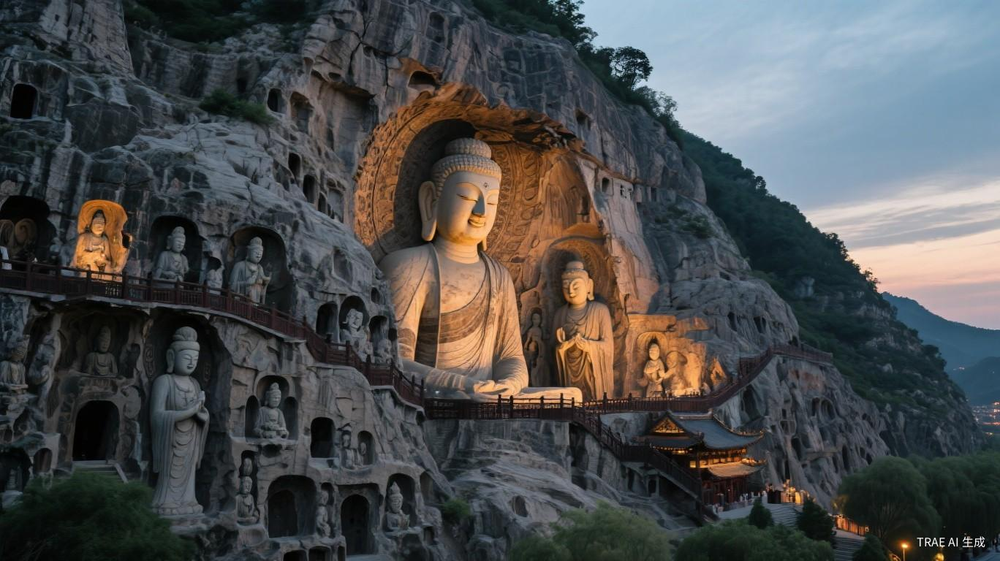
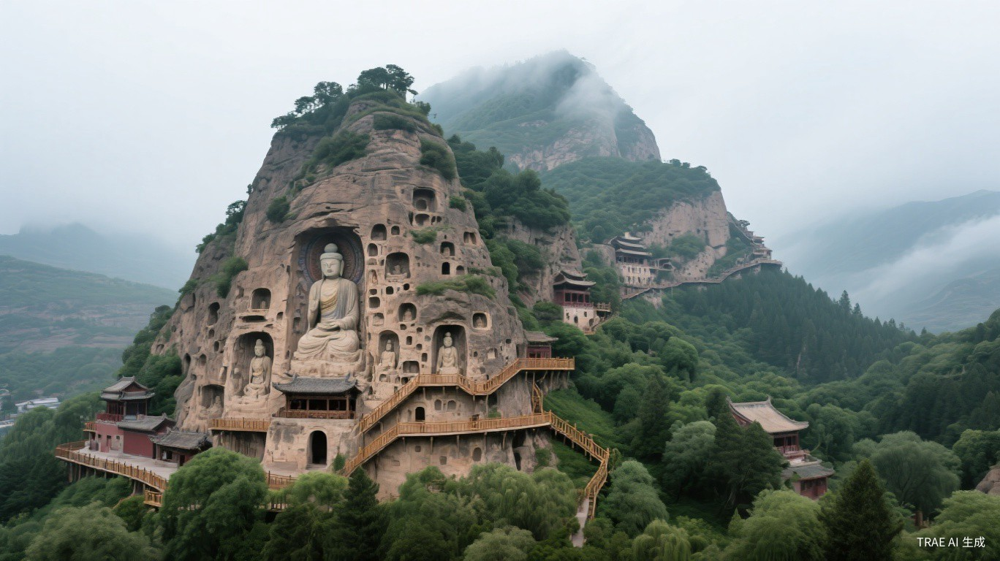
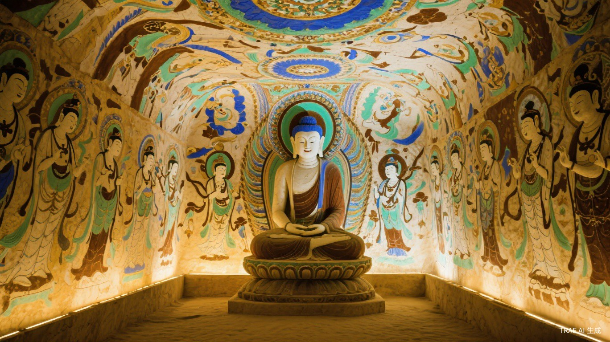
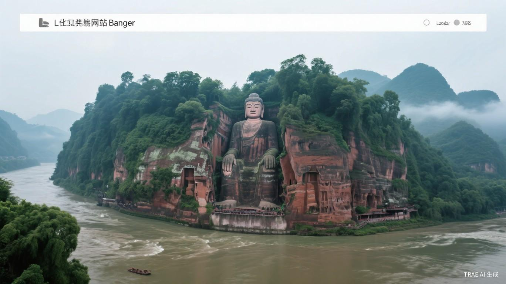

石窟艺术 · 摩崖造像 · 石刻碑文
佛教传入中国后与本土文化融合，在崖壁上雕刻出千年不朽的艺术殿堂
中国石窟艺术是佛教传入中国后与本土文化融合的产物，从公元3世纪开始，历经南北朝、隋唐、宋元等朝代，持续开凿近千年。这些石窟不仅是宗教艺术的殿堂，更是中国古代政治、经济、文化的综合体现，被誉为"刻在石头上的百科全书"。
探索中国石窟艺术的千年传承与精湛技艺

位于重庆市大足区，是中国晚期石窟艺术的代表作。以北山、宝顶山、南山、石门山、石篆山"五山"为代表， 共有造像5万余尊。宝顶山的大佛湾是规模最大的造像群，其中的千手观音像有1007只手， 是中国石刻艺术中最大的千手观音像。大足石刻以世俗化、生活化的特点著称， 将佛教教义与民间生活场景完美融合。

位于山西省大同市，是中国第一座由皇家主持开凿的大型石窟。现存主要洞窟45个， 造像5.9万余尊。云冈石窟的昙曜五窟（第16-20窟）是最早开凿的皇家洞窟， 其中的第20窟露天大佛高13.7米，是云冈石窟的标志性造像。 云冈石窟融合了印度犍陀罗艺术、波斯艺术与中国传统艺术，是中西文化交融的典范。

位于河南省洛阳市，是中国石刻艺术的最高峰。现存窟龛2345个，造像10万余尊， 碑刻题记2800余品。奉先寺的卢舍那大佛高17.14米，是龙门石窟中最大的佛像， 相传以武则天为原型雕刻。龙门石窟的造像风格从北魏的"秀骨清像"演变为唐代的丰满圆润， 反映了中国审美观念的变迁。

位于甘肃省天水市，因山形酷似麦垛而得名。现存窟龛221个，造像1万余尊， 以精美的泥塑艺术闻名于世，被誉为"东方雕塑馆"。麦积山石窟的造像以微笑表情著称， 从北魏的含蓄微笑到宋代的明朗笑容，展现了不同时代的审美趣味。 第133窟的释迦会子像被誉为"东方蒙娜丽莎"。

位于甘肃省敦煌市，是世界上现存规模最大、内容最丰富的佛教艺术圣地。 现存洞窟735个，壁画4.5万平方米，泥质彩塑2415尊。莫高窟的壁画内容涵盖佛经故事、 山水风景、建筑服饰、乐舞百戏等，是研究中国古代社会的百科全书。 藏经洞出土的5万余件文献更是20世纪最重要的考古发现之一。

位于四川省乐山市，是世界上最大的石刻弥勒佛坐像，通高71米， 头高14.7米，耳长7米，足宽8.5米。大佛开凿于唐玄宗开元元年， 历时90年完成。佛像依凌云山栖鸾峰临江峭壁凿成， "山是一尊佛，佛是一座山"，与周围的凌云寺、乌尤寺等构成宏大的佛教文化景观。 大佛的设计还巧妙地融入了排水系统，保护佛像免受雨水侵蚀。
佛教从印度经丝绸之路传入中国，西域地区的克孜尔石窟、库木吐拉石窟等最早开凿，保留了浓郁的印度风格。
云冈石窟、龙门石窟相继开凿，皇家主导的大规模造像开始。造像风格从印度犍陀罗风格逐渐中国化。
石窟艺术达到巅峰，乐山大佛、敦煌莫高窟盛唐壁画、龙门奉先寺等代表了这一时期最高成就。造像丰满圆润，气势恢宏。
大足石刻等晚期石窟兴起，造像更加世俗化、生活化。佛教艺术从皇家走向民间，题材更加贴近百姓生活。
敦煌研究院等专业机构成立，运用现代科技对石窟进行保护和数字化记录。多处石窟被列入世界文化遗产名录。